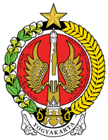

Sri Sultan Hamengkubuwana I (Bahasa Jawa: Sri Sultan Hamengkubuwono I), (lahir di Kartasura, 6 Agustus 1717 – meninggal di Yogyakarta, 24 Maret 1792 pada umur 74 tahun) merupakan pendiri sekaligus raja pertama Kesultanan Yogyakarta yang memerintah tahun 1755 - 1792
Pendiri Yogyakarta : Keraton Yogyakarta mulai didirikan oleh Sultan Hamengku Buwono I beberapa bulan pasca Perjanjian Giyanti pada tahun 1755, Pembangunan ibu kota Kasultanan Yogyakarta ini membutuhkan waktu satu tahun. Pada hari Kamis bertepatan dengan 7 Oktober 1756
Arti nama yogyakarta : Nama Yogyakarta terambil dari dua kata, yaitu Ayogya atau '''Ayodhya''' yang berarti "kedamaian" (atau tanpa perang, a "tidak", yogya merujuk pada yodya atau yudha, yang berarti "perang"), dan Karta yang berarti "baik". Ayodhya merupakan kota yang bersejarah di India dimana wiracarita Ramayana terjadi. Tapak keraton Yogyakarta sendiri menurut babad (misalnya Babad Giyanti) dan leluri (riwayat oral) telah berupa sebuah dalem yang bernama Dalem Gerjiwati; lalu dinamakan ulang oleh Sunan Pakubuwana II sebagai Dalem Ayogya
tokoh besar yogyakerta : JENDRAL SOESILO SOEDARMAN, JENDRAL YASIR HADIBROTO,PROF. DR. SOEMITRO JOYOHADIKUSUMO, RADEN MAS MARGONO JOYOHADIKUSUMO, JENDRAL GATOT SUBROTO
 .